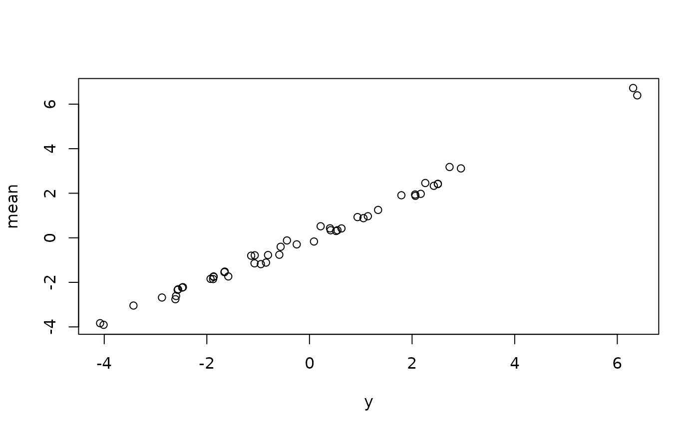

Predict conditional mean and quantiles from a D-vine regression model
Source:R/predict.vinereg.R
predict.vinereg.RdPredict conditional mean and quantiles from a D-vine regression model
Arguments
- object
an object of class
vinereg.- newdata
a data frame containing the covariates from the original formula, with matching classes and factor levels. If omitted, the model frame used for fitting is used.
- alpha
vector of quantile levels;
NApredicts the mean based on an average of the1:10 / 11-quantiles.- cores
integer; the number of cores to use for computations.
- ...
unused.
Value
A data frame with one row per observation and one column per value of
alpha. Columns are named by their quantile level; the conditional mean
column is named mean.
Examples
# simulate data
x <- matrix(rnorm(100), 50, 2)
y <- x %*% c(1, -2)
dat <- data.frame(y = y, x = x, z = as.factor(rbinom(50, 2, 0.5)))
## fixed variable order (no selection)
(fit <- vinereg(y ~ ., dat, order = c("x.2", "x.1", "z")))
#> D-vine regression model: y | x.2, x.1, z.1, z.2
#> nobs = 50, edf = 7.16, cll = 4.68, caic = 4.95, cbic = 18.63
# model predictions
mu_hat <- predict(fit, newdata = dat, alpha = NA) # mean
med_hat <- predict(fit, newdata = dat, alpha = 0.5) # median
# observed vs predicted
plot(cbind(y, mu_hat))
